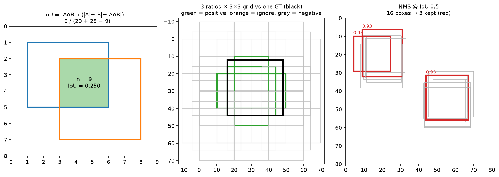
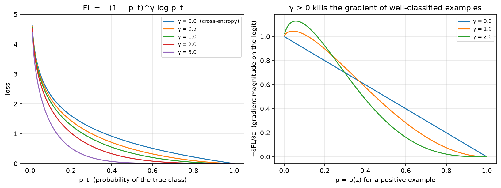

Object detection¶
Why this matters at staff level. Detection is the workhorse of every perception product, in autonomy, retail, moderation and document understanding, and it is the richest source of interview material in vision because it forces you to combine geometry (boxes, IoU), learning (assignment, imbalance, losses) and systems (NMS cost, multi-scale, latency budgets). Expect a coding round ("vectorised IoU, then NMS"), a depth round ("derive focal loss and its gradient, and explain the prior-initialised bias"), and a design round ("detect 20 cm debris at 100 m from a moving vehicle"). Strong signal is fluency in why the field moved: sliding windows, then anchors, then anchor-free, then set prediction, with the specific pathology each step fixed.
TL;DR, the interview card¶
- IoU \(= \frac{|A \cap B|}{|A| + |B| - |A \cap B|}\), where the intersection is a box whose width and height you clamp at 0. Vectorise it to \((N,M)\) with broadcasting:
lt = max(a[:,None,:2], b[None,:,:2]),rb = min(a[:,None,2:], b[None,:,2:]). - IoU has zero gradient for disjoint boxes. GIoU subtracts the enclosing-box waste, DIoU adds a centre-distance term, CIoU adds aspect ratio. Use GIoU or CIoU as a loss, and plain IoU for assignment and evaluation.
- Box coding: \(t_x = \frac{g_x - a_x}{a_w \sigma_1}\) and \(t_w = \frac{\log(g_w/a_w)}{\sigma_2}\), which is scale-invariant and gives roughly unit-variance targets, so one smooth-L1 works for both centre and size. Clamp \(\exp\) at \(\log(1000/16)\) when decoding.
- Assignment is the real algorithm. Fixed IoU thresholds (0.5 and 0.4 with an ignore band, plus "each GT keeps its best anchor"), then ATSS with a per-GT adaptive threshold of \(\mu + \sigma\) over candidate IoUs, then SimOTA and TAL with cost-based dynamic top-\(k\). Poor small-object recall usually traces back to assignment, so look there before you change the backbone.
- Focal loss: \(\mathrm{FL} = -\alpha_t (1-p_t)^\gamma \log p_t\), with gradient for a positive \(\alpha(1-p)^\gamma[\gamma p \log p - (1-p)]\). \(\gamma\) down-weights easy examples, \(\alpha\) rebalances classes, and the prior bias \(b = -\log\frac{1-\pi}{\pi}\) with \(\pi = 0.01\) stops the initial loss being dominated by about 100k confident-wrong negatives.
- NMS is \(O(N^2)\) worst case, greedy, and not differentiable. Batched (class-offset) NMS runs all classes in one call. Soft-NMS decays scores instead of deleting boxes, for crowded scenes.
- Two-stage against one-stage: Faster R-CNN gets accuracy from a second-stage refinement on about 1k proposals with ROIAlign, while RetinaNet and FCOS get speed from one dense pass and fix imbalance with focal loss. ROIAlign removes the two quantisations of ROIPool, which masks need.
- DETR removes anchors and NMS by predicting a set with bipartite matching. See Part VIII ch. 02 for the Hungarian-matching detail.
- mAP averages precision over recall and over IoU thresholds (COCO uses 0.50:0.05:0.95). See Part XIII evaluation.
1. Intuition first¶
Detection is classification plus localisation over an unknown number of objects. The naive solution is a sliding window: crop every possible box and classify it. At \(800 \times 1333\), with boxes at every position, scale and aspect ratio, that is \(10^8\) to \(10^9\) crops. Every advance in detection is a way of making that search tractable while keeping recall.
Anchors are the first big idea. Instead of every box, fix a small set of reference boxes per feature-map cell, typically 3 aspect ratios times 3 scales at each of about \(100\times167\) cells per pyramid level, and let the network score each one and regress a small correction. The search space collapses from \(10^9\) to about \(10^5\), and because the correction is a small delta, the regression problem is easy and scale-invariant.
Three quantities carry the whole chapter, and the figure shows all three.

Left: IoU on two hand-computable boxes, with intersection 9, union 36 and IoU 0.25. Middle: a \(3\times3\) anchor grid with three aspect ratios against one ground-truth box in black. Green anchors pass the 0.5 IoU threshold and become positives, orange fall in the ignore band, grey are background. Right: 16 jittered detections of two objects collapse to 3 boxes after greedy NMS at IoU 0.5, and the two overlapping reds on the left object are a threshold artefact worth understanding.
Work the IoU by hand once. Boxes \(A = (1,1,6,5)\) and \(B = (3,2,8,7)\). Intersection corners are \((\max(1,3), \max(1,2)) = (3,2)\) and \((\min(6,8), \min(5,7)) = (6,5)\), so the intersection is \(3\times3 = 9\). Areas are \(5\times4 = 20\) and \(5\times5 = 25\), so IoU \(= 9/(20+25-9) = 9/36 = 0.25\). If the boxes were disjoint, \(\max\) would exceed \(\min\) and you would have to clamp the width and height at zero. Forgetting that clamp is the most common bug in an IoU coding round, and it produces a positive IoU for non-overlapping boxes, because two negatives multiply.
Then the imbalance problem. A dense detector evaluates about 100k anchors per image against maybe 10 objects, a 10,000:1 background-to-foreground ratio. Under ordinary cross-entropy the summed loss of 100k easy negatives, each individually tiny, swamps the handful of positives, and the network's best move in the first few hundred steps is to predict background everywhere. Two-stage detectors dodge this by sampling, since Faster R-CNN uses a 1:3 positive-to-negative ratio in a 256-anchor minibatch. One-stage detectors needed focal loss.
2. The math¶
2.1 IoU and its differentiable relatives¶
For axis-aligned boxes in \((x_1, y_1, x_2, y_2)\) form,
IoU is scale-invariant, since numerator and denominator are both areas, and bounded in \([0,1]\), which is why it is the matching and evaluation metric. As a loss it has a fatal flaw: when \(A \cap B = \emptyset\) then \(\mathrm{IoU} = 0\) and \(\partial\mathrm{IoU}/\partial A = 0\), so nothing tells a badly-placed prediction which way to move. The fixes form a family, each adding one term:
where \(C\) is the smallest box enclosing both, \(\rho\) is the centre distance, \(c\) is the diagonal of \(C\), \(v = \frac{4}{\pi^2}\left(\arctan\frac{w_B}{h_B} - \arctan\frac{w_A}{h_A}\right)^2\) measures aspect-ratio discrepancy, and \(\alpha = \frac{v}{1 - \mathrm{IoU} + v}\) switches the aspect term on only once the boxes overlap.
GIoU lives in \((-1, 1]\) and is negative and informative for disjoint boxes, measuring how much of the enclosing box is wasted. DIoU converges faster because the centre term pulls directly, where GIoU first grows the box to overlap and then shrinks it. Worked example with \(A = (0,0,2,2)\) and \(B = (4,0,6,2)\), which are disjoint: \(C = (0,0,6,2)\), \(|C| = 12\), union \(= 8\), so \(\mathrm{GIoU} = 0 - 4/12 = -1/3\). Centre distance squared is 16 and diagonal squared is 40, so \(\mathrm{DIoU} = -0.4\). Both are differentiable and non-zero, while plain IoU is flat at 0.
2.2 Box parametrisation¶
Regressing \((x_1,y_1,x_2,y_2)\) in pixels is badly conditioned, since a 5-pixel error is catastrophic for a 20-pixel object and irrelevant for a 400-pixel one. Encode relative to the anchor \(a\) instead, on centre-size coordinates:
Dividing the centre offset by the anchor size makes it scale-invariant, so a half-anchor shift is \(t = 0.5\) for any object size. The \(\log\) on the size makes ratios additive and guarantees the decoded width is positive for any real \(t\). The \(\sigma\) values, called variances in SSD and weights in torchvision, are fixed constants, typically \(\sigma_1 = 0.1\) and \(\sigma_2 = 0.2\), that rescale the targets to roughly unit variance so a single smooth-L1 with one \(\beta\) handles centre and size alike. Decoding inverts this, with \(\exp\) clamped at \(\log(1000/16) \approx 4.135\), so an untrained network cannot emit a box a thousand times the anchor and produce NaNs downstream.
Hand-check the code's test case. Anchor \((10,10,30,50)\) becomes \((c_x,c_y,w,h) = (20,30,20,40)\), and GT \((12,8,34,52)\) becomes \((23,30,22,44)\). Then \(t_x = (23-20)/(20 \cdot 0.1) = 1.5\), \(t_y = 0\), \(t_w = \log(22/20)/0.2 = \log(1.1)/0.2\), and \(t_h = \log(44/40)/0.2 = \log(1.1)/0.2\).
2.3 Anchor generation¶
An anchor template of nominal size \(s\) and aspect ratio \(r = h/w\), with area held at \(s^2\), satisfies \(wh = s^2\) and \(h = rw\), so
Tile the templates at every cell centre. Cell \((i,j)\) of a feature map at stride \(\tau\) has image-space centre \(\big((j + 0.5)\tau,\ (i+0.5)\tau\big)\), the half-pixel offset from chapter 1 again. RetinaNet uses anchor size \(= 4\tau\) at each FPN level with scales \(\{2^0, 2^{1/3}, 2^{2/3}\}\) and ratios \(\{0.5, 1, 2\}\), so 9 anchors per location across \(P_3\) to \(P_7\) at strides 8 to 128, covering object sizes from 32 to 813 px. Counting them, \(\sum_l \frac{HW}{\tau_l^2}\cdot 9 \approx 100\)k for an \(800\times1333\) image.
2.4 Assignment¶
Assignment decides, for each anchor, whether it is a positive with a target box, a negative, or ignored. It is the most consequential and least glamorous design choice in detection.
Max-IoU with thresholds, as in the Faster R-CNN RPN and RetinaNet, computes the \((N, M)\) IoU matrix and takes each anchor's best GT. At or above \(\tau_{\text{pos}} = 0.5\) it is positive, below \(\tau_{\text{neg}} = 0.4\) it is negative, and in between it is ignored, excluded from the loss entirely, because ambiguous anchors give noisy gradients. Then comes a low-quality-match pass: every GT additionally claims its own best anchor regardless of IoU, so a thin or tiny object that no anchor overlaps at 0.5 is still learnable. Both rules matter, and dropping the second silently loses all objects below a size threshold.
ATSS (Zhang et al., CVPR 2020, arXiv:1912.02424) replaces the fixed threshold with a per-GT statistic. For each GT, take the \(k\) anchors closest in centre distance on each FPN level, compute their IoUs \(\{u_i\}\) with this GT, set the threshold to \(\mu + \sigma\) of that set, and take as positives the candidates with \(u_i \ge \mu+\sigma\) whose centre lies inside the GT. What counts as a good IoU depends on the object: a large object has many anchors at IoU 0.7, a thin pole may max out at 0.2, and a fixed 0.5 gives the pole zero positives. Using \(\mu + \sigma\) adapts automatically, and the paper shows this single change closing most of the anchor-based versus anchor-free gap.
SimOTA and TAL, used in YOLOX and YOLOv6/v8, go further. Build a cost \(c_{ij} = \mathcal{L}_{\text{cls}}(i,j) + \lambda\mathcal{L}_{\text{reg}}(i,j)\) between every candidate anchor \(i\) and GT \(j\), estimate a dynamic \(k_j\) as the rounded sum of the top-10 IoUs, and assign the \(k_j\) lowest-cost anchors to GT \(j\). Assignment becomes prediction-aware: an anchor is positive because the network is already doing well on it, which stabilises training late and reduces the mismatch between the training assignment and test-time NMS behaviour.
2.5 Focal loss, derivation and gradient¶
Let \(z\) be the logit for one (anchor, class) pair, \(p = \sigma(z)\), \(y \in \{0,1\}\), and \(p_t = p\) when \(y = 1\) and \(1-p\) otherwise. Cross-entropy is \(-\log p_t\). Focal loss multiplies by a modulating factor:
with \(\alpha_t = \alpha\) for positives and \(1-\alpha\) for negatives. For a well-classified example, where \(p_t \to 1\), the factor \((1-p_t)^\gamma \to 0\) much faster than \(-\log p_t \to 0\), so its contribution vanishes. For a hard example at \(p_t \approx 0.5\) the factor is about 0.25 at \(\gamma = 2\), a mild reduction. At \(p_t = 0.9\) and \(\gamma=2\) the loss is down-weighted 100-fold, and summed over 100k negatives that is the difference between drowning and training.
Now derive the gradient, which is the part candidates fumble. Using \(\frac{dp}{dz} = p(1-p)\), for a positive with \(y=1\) and \(p_t = p\):
and symmetrically for a negative with \(y = 0\), \(p_t = 1-p\) and \(\mathrm{FL} = -(1-\alpha)p^\gamma\log(1-p)\):
Two sanity checks. At \(\gamma = 0\) the positive gradient is \(-\alpha(1-p)\), exactly \(\alpha\) times the BCE gradient \(p - y\). As \(p \to 1\) for a positive, both \((1-p)^\gamma\) and the bracket vanish, so the easy example contributes nothing. The \(\gamma p \log p\) term is negative and opposes the \(-(1-p)\) term, and it is what flattens the gradient curve in the middle of the range.

Left: \(-\,(1-p_t)^\gamma\log p_t\), where \(\gamma=0\) is cross-entropy and increasing \(\gamma\) progressively flattens the loss for well-classified examples. Right: \(-\partial\mathrm{FL}/\partial z\) for a positive. With \(\gamma > 0\) the gradient peaks on hard examples at small \(p\) and collapses for easy ones, and that gradient reshaping is the mechanism at work; the loss curve on the left does not show it.
The two hyperparameters do different jobs. \(\gamma\), default 2, controls example weighting, hard against easy. \(\alpha\), default 0.25, controls class weighting, foreground against background. They interact: as \(\gamma\) rises the negatives are already suppressed, so the best \(\alpha\) falls. The paper's grid finds \(\gamma=2\) with \(\alpha=0.25\), while at \(\gamma=0\) the best \(\alpha\) is 0.75. Interviewers like to ask why you keep \(\alpha\) at all if \(\gamma\) already handles imbalance. Because \(\gamma\) suppresses easy examples of both classes, including easy positives, and \(\alpha\) restores the foreground-background balance on top.
Prior initialisation completes the recipe. Initialise the classification conv's bias so that every anchor starts at \(p = \pi = 0.01\):
Without it, \(p \approx 0.5\) on 100k anchors means the first backward pass is dominated by a huge uniform negative gradient, and the RetinaNet paper reports training diverging. With it, the negatives start almost correct and contribute little, so the positives steer from step one.
2.6 NMS¶
Greedy NMS sorts by score, then repeatedly takes the top box, emits it, and deletes every remaining box whose IoU against it exceeds \(\tau\). Each iteration computes IoU against the survivors, so the worst case, with no suppression at all, is \(\sum_{i} (N - i) = O(N^2)\) IoU evaluations. Here \(N\) is the pre-NMS top-\(k\), typically 1000 per level, so the top-\(k\) choice is the latency knob. NMS is sequential and data-dependent, which is why it ships as a CUDA kernel with a bitmask, and why removing it (DETR) is architecturally attractive.
Two variants matter. Class-aware, or batched, NMS prevents boxes of different classes suppressing each other. Rather than looping over classes, add a per-class offset larger than any coordinate to every box, so different classes land in disjoint regions of the plane and a single NMS call does the job. Soft-NMS (Bodla et al., ICCV 2017, arXiv:1704.04503) decays instead of deleting, setting \(s_j \leftarrow s_j\,e^{-\mathrm{IoU}(M, b_j)^2/\sigma}\) and dropping only below a score floor. In crowded scenes, say two pedestrians at IoU 0.6, hard NMS deletes a true positive while soft-NMS demotes it so it can still be counted at lower precision.
2.7 The architecture lineage¶
Faster R-CNN (Ren et al., NeurIPS 2015, arXiv:1506.01497) is two networks sharing a backbone. The RPN is a small conv head over the feature map that scores 9 anchors per cell as object or not and regresses deltas, a class-agnostic proposal generator trained with a 256-anchor minibatch at a 1:1 positive-to-negative ratio. It emits about 2000 proposals, 1000 at test time, which are NMS'd and fed to the second stage: crop each proposal's features to a fixed \(7\times7\) grid and run a small head for \(K+1\) classes and class-specific box refinement. The two-stage structure earns its accuracy by letting the second stage see features aligned to the object instead of to a grid cell, and by giving a second, better-conditioned regression a shot.
ROIPool quantises twice, rounding the proposal's real-valued box to integer feature cells and then rounding each of the \(7\times7\) bin edges. At stride 16 that is up to 8 pixels of misalignment in image space, which is tolerable for classification and fatal for masks. ROIAlign (Mask R-CNN, arXiv:1703.06870) keeps continuous coordinates and bilinearly samples a fixed number of points per bin, typically \(2\times2\), then averages. Mask R-CNN reports this single change lifting mask AP by about 3 points, and up to 50% relative under a strict IoU threshold. See segmentation.
SSD (Liu et al., ECCV 2016, arXiv:1512.02325) dropped the second stage, predicting class scores and box deltas directly from multiple backbone feature maps with anchors ("default boxes") sized per level. It was fast and weak on small objects, because the high-resolution layers it used for them are shallow and semantically poor. FPN solved that.
RetinaNet (Lin et al., ICCV 2017, arXiv:1708.02002) is ResNet plus FPN plus two small shared heads of 4 convs each, trained with focal loss. FPN gives every level both resolution and semantics through a top-down upsample and a lateral \(1\times1\) add, covered in chapter 1 §2.6, and focal loss makes dense one-stage training work. The result is one-stage speed at two-stage accuracy, supporting the paper's thesis that the accuracy gap came from class imbalance and not from the architecture.
FCOS (Tian et al., ICCV 2019, arXiv:1904.01355) removes anchors. Each feature location inside a GT box predicts the class and four distances \((l, t, r, b)\) to the box edges, with no anchor reference. Scale ambiguity, meaning which FPN level handles a location covered by two GTs, is resolved by assigning each level a range of \(\max(l,t,r,b)\). The pathology it introduces is that locations near the box border produce low-quality boxes with confident scores, so FCOS adds a centerness branch,
trained with BCE and multiplied into the score at inference, so off-centre predictions are demoted before NMS. Anchor-free removes anchor hyperparameters (scales, ratios, IoU thresholds), and ATSS showed that with a good assigner, anchor-based and anchor-free perform the same. The lesson concerns assignment.
The YOLO lineage, for literacy. v1 (2016, arXiv:1506.02640) used a single grid with 2 boxes per cell and direct regression: fast, poor localisation. v2 and YOLO9000 added anchors from \(k\)-means on the dataset's box shapes, batch norm, and higher resolution. v3 added multi-scale predictions with an FPN-like 3-level head and logistic per-class scores for multi-label. v4 (arXiv:2004.10934) assembled CSPDarknet, Mosaic augmentation, CIoU loss, SPP and PAN. v5 (Ultralytics, engineering-led, no paper) added anchor auto-fitting and extensive training tooling and became the de-facto industrial baseline. YOLOX (arXiv:2107.08430) went anchor-free with decoupled classification and regression heads and SimOTA. v6 and v7 added re-parameterised blocks, training multi-branch and deploying single-branch, with TAL assignment. v8 is anchor-free with a decoupled head and distribution-focal-loss box regression. Through the whole line, the backbone changes are minor and the wins come from assignment, augmentation (Mosaic), and re-parameterisation for deployment.
DETR (Carion et al., ECCV 2020, arXiv:2005.12872) reframes detection as set prediction. \(N=100\) learned object queries attend to image features and each emits one box and class, including a "no object" class. Training uses bipartite matching: the Hungarian algorithm finds the one-to-one assignment between predictions and GT that minimises a matching cost, and only the matched pairs get a box loss. That one-to-one constraint removes NMS, because duplicates are penalised at training time when a second prediction of the same object must be matched to \(\varnothing\). The costs were very slow convergence, 500 epochs originally, fixed by Deformable DETR's sparse attention and by DN-DETR and DINO's denoising queries, and weak small-object performance at first. The matching maths lives in Part VIII ch. 02. What you need here is why it mattered: it made the post-processing part of the model.
2.8 The complete single-stage loss¶
Putting it together, per image:
Three normalisation details separate implementations and get probed in interviews. Both terms are divided by the number of positive anchors rather than by the number of anchors, since otherwise an image with many objects gets a smaller per-object gradient. The classification sum runs over valid (non-ignored) anchors including all negatives, while the regression sum runs only over positives, because a background anchor has no box to regress. And smooth_l1 with \(\beta = 1/9\), RetinaNet's choice, is close to L1 for the encoded targets, which are \(O(1)\), so the quadratic region only softens the very small errors.
3. Implementation¶
Everything lives in src/mlbook/detection/. Start with the \((N,M)\) IoU, the most-asked function in this chapter:
def box_iou(a: np.ndarray, b: np.ndarray) -> np.ndarray:
lt = np.maximum(a[:, None, :2], b[None, :, :2]) # (N, M, 2) intersection top-left
rb = np.minimum(a[:, None, 2:], b[None, :, 2:]) # (N, M, 2) intersection bottom-right
wh = np.clip(rb - lt, 0.0, None) # (N, M, 2) clamp: disjoint gives 0, not negative
inter = wh[..., 0] * wh[..., 1] # (N, M)
union = box_area(a)[:, None] + box_area(b)[None, :] - inter # (N, M)
return inter / np.maximum(union, 1e-12) # (N, M)
The broadcasting is the trick: a[:, None, :2] is \((N,1,2)\) and b[None, :, :2] is \((1,M,2)\), so the elementwise maximum produces \((N,M,2)\) with no loop. The clamp is load-bearing, and np.maximum(union, 1e-12) protects against degenerate zero-area boxes from a badly-decoded prediction.
GIoU, DIoU and CIoU build on the same primitives, where the enclosing box is the min of the top-lefts and the max of the bottom-rights:
def box_giou(a: np.ndarray, b: np.ndarray) -> np.ndarray:
iou = box_iou(a, b) # (N, M)
...
enc = _enclosing_box(a, b) # (N, M, 4) smallest box containing both
enc_area = (enc[..., 2] - enc[..., 0]) * (enc[..., 3] - enc[..., 1]) # (N, M)
return iou - (enc_area - union) / np.maximum(enc_area, 1e-12) # (N, M)
Box coding transcribes §2.2 directly, on centre-size coordinates:
def encode_boxes(gt, anchors, variances=(0.1, 0.2)):
g = xyxy_to_cxcywh(gt) # (N, 4)
a = xyxy_to_cxcywh(anchors) # (N, 4)
t_xy = (g[:, :2] - a[:, :2]) / (a[:, 2:] * variances[0]) # (N, 2) scale-invariant centre offset
t_wh = np.log(g[:, 2:] / a[:, 2:]) / variances[1] # (N, 2) log size ratio
return np.concatenate([t_xy, t_wh], axis=1) # (N, 4)
def decode_boxes(deltas, anchors, variances=(0.1, 0.2), max_wh_log=4.135):
a = xyxy_to_cxcywh(anchors) # (N, 4)
cxcy = a[:, :2] + deltas[:, :2] * variances[0] * a[:, 2:] # (N, 2)
wh = a[:, 2:] * np.exp(np.minimum(deltas[:, 2:] * variances[1], max_wh_log)) # (N, 2) clamped exp
return cxcywh_to_xyxy(np.concatenate([cxcy, wh], axis=1)) # (N, 4)
Anchors are templates at the origin, then tiled by broadcasting a \((HW, 1, 4)\) shift against a \((1, A, 4)\) template block:
def base_anchors(size, ratios=(0.5, 1.0, 2.0), scales=(1.0, 2**(1/3), 2**(2/3))):
out = []
for r in ratios:
for s in scales:
w = size * s / np.sqrt(r) # fixed area: w·h = (size·s)²
h = w * r
out.append([-w / 2, -h / 2, w / 2, h / 2])
return np.asarray(out, dtype=np.float64) # (A, 4) centred at the origin
def grid_anchors(feat_h, feat_w, stride, templates):
cy = (np.arange(feat_h) + 0.5) * stride # (H_f,) cell-centre convention
cx = (np.arange(feat_w) + 0.5) * stride # (W_f,)
grid_y, grid_x = np.meshgrid(cy, cx, indexing="ij") # (H_f, W_f) each
shifts = np.stack([grid_x, grid_y, grid_x, grid_y], -1).reshape(-1, 1, 4) # (H_f·W_f, 1, 4)
anchors = templates[None, :, :] + shifts # (H_f·W_f, A, 4) broadcast
return anchors.reshape(-1, 4) # (H_f·W_f·A, 4)
The max-IoU assigner implements the three rules of §2.4, including the low-quality-match pass that is easy to forget:
def assign_max_iou(anchors, gt_boxes, pos_iou=0.5, neg_iou=0.4):
iou = box_iou(anchors, gt_boxes) # (N, M)
matched_gt = iou.argmax(axis=1) # (N,) best GT per anchor
max_iou = iou[np.arange(N), matched_gt] # (N,)
labels = np.full(N, -1, dtype=np.int64) # (N,) start as ignore
labels[max_iou < neg_iou] = 0 # background
labels[max_iou >= pos_iou] = 1 # foreground
best_anchor_per_gt = iou.argmax(axis=0) # (M,) low-quality matches
labels[best_anchor_per_gt] = 1 # every GT keeps its best anchor
matched_gt[best_anchor_per_gt] = np.arange(len(gt_boxes))
return labels, matched_gt
ATSS replaces the constant threshold with \(\mu + \sigma\) over per-level nearest candidates, and resolves multi-GT conflicts by keeping the higher IoU:
def assign_atss(anchors, gt_boxes, level_ids, top_k=9):
...
for m in range(M):
candidates = []
for level in np.unique(level_ids):
idx = np.flatnonzero(level_ids == level)
closest = idx[np.argsort(dist[idx, m])[: min(top_k, len(idx))]] # (k,) per level
candidates.append(closest)
cand = np.concatenate(candidates) # (L·k,)
cand_iou = iou[cand, m] # (L·k,)
threshold = cand_iou.mean() + cand_iou.std() # adaptive, per ground truth
inside = (a_c[cand, 0] > gt_boxes[m, 0]) & ... & (a_c[cand, 1] < gt_boxes[m, 3]) # (L·k,)
pos = cand[(cand_iou >= threshold) & inside] # (P,)
...
NMS is greedy, with survivors filtered by a boolean mask each round:
def nms(boxes, scores, iou_threshold=0.5):
order = np.argsort(-scores) # (N,) descending score
keep = []
while order.size > 0:
i = int(order[0]); keep.append(i)
if order.size == 1:
break
ious = box_iou(boxes[i : i + 1], boxes[order[1:]])[0] # (N_remaining,)
order = order[1:][ious <= iou_threshold] # (N_survivors,)
return np.asarray(keep, dtype=np.int64) # (K,)
and the class-aware version uses the offset trick, which answers "how do you do NMS for 80 classes without a Python loop?":
def batched_nms(boxes, scores, class_ids, iou_threshold=0.5):
max_coord = boxes.max() + 1.0 # larger than any coordinate
offsets = class_ids.astype(np.float64)[:, None] * max_coord # (N, 1)
shifted = boxes + offsets # (N, 4) each class in its own strip
return nms(shifted, scores, iou_threshold) # (K,)
Focal loss goes in PyTorch, with its gradient written by hand in NumPy so the derivation is tested and not merely asserted:
def sigmoid_focal_loss(logits, targets, alpha=0.25, gamma=2.0, reduction="sum"):
p = torch.sigmoid(logits) # (N, K)
ce = F.binary_cross_entropy_with_logits(logits, targets, reduction="none") # (N, K) = −log p_t
p_t = p * targets + (1.0 - p) * (1.0 - targets) # (N, K)
modulating = (1.0 - p_t) ** gamma # (N, K)
alpha_t = alpha * targets + (1.0 - alpha) * (1.0 - targets) # (N, K)
loss = alpha_t * modulating * ce # (N, K)
return loss.sum() if reduction == "sum" else (loss.mean() if reduction == "mean" else loss)
def focal_loss_grad_numpy(z, y, alpha=0.25, gamma=2.0):
p = 1.0 / (1.0 + np.exp(-z)) # (N,)
grad_pos = alpha * (1.0 - p) ** gamma * (gamma * p * np.log(p) - (1.0 - p)) # (N,) §2.5
grad_neg = (1.0 - alpha) * p ** gamma * (p - gamma * (1.0 - p) * np.log(1.0 - p)) # (N,)
return np.where(y == 1, grad_pos, grad_neg) # (N,)
Note binary_cross_entropy_with_logits rather than log(sigmoid(z)). The fused version stays numerically stable for \(|z| \gg 0\), using the \(\max(z,0) - zy + \log(1+e^{-|z|})\) form, and a dense detector does produce logits of \(\pm 15\).
The loss assembly carries the \(N_{\text{pos}}\) normalisation and the ignore mask:
def single_stage_loss(cls_logits, box_deltas, cls_targets, reg_targets, labels,
alpha=0.25, gamma=2.0, beta=1.0 / 9.0):
valid = labels >= 0 # (N,) drop ignored anchors
num_pos = (labels == 1).sum().clamp(min=1).to(cls_logits.dtype) # scalar
cls_loss = sigmoid_focal_loss(cls_logits[valid], cls_targets[valid],
alpha, gamma, reduction="sum") / num_pos
pos = labels == 1 # (N,)
reg_loss = F.smooth_l1_loss(box_deltas[pos], reg_targets[pos],
beta=beta, reduction="sum") / num_pos
return cls_loss, reg_loss
ROIAlign is written with explicit loops so that the removal of the two quantisations is visible:
def roi_align(feat, box, output_size, spatial_scale, sampling_ratio=2):
x1, y1, x2, y2 = (box * spatial_scale).tolist() # continuous feature coords, no rounding
bin_w = max(x2 - x1, 1.0) / output_size
bin_h = max(y2 - y1, 1.0) / output_size
out = feat.new_zeros(feat.shape[0], output_size, output_size) # (C, P, P)
for i in range(output_size):
for j in range(output_size):
acc = feat.new_zeros(feat.shape[0]) # (C,)
for si in range(sampling_ratio):
for sj in range(sampling_ratio):
y = y1 + i * bin_h + (si + 0.5) * bin_h / sampling_ratio # bin-interior sample
x = x1 + j * bin_w + (sj + 0.5) * bin_w / sampling_ratio
acc = acc + bilinear_at(feat, y, x) # (C,) bilinear, differentiable
out[:, i, j] = acc / (sampling_ratio ** 2)
return out # (C, P, P)
Compare roi_pool in the same file. It starts with [int(round(v)) for v in (box * spatial_scale)], which is the first quantisation, and int(i * roi_h / output_size) is the second.
How you'd test it. IoU against hand-computed values including the containment and disjoint cases. GIoU and DIoU on the worked disjoint example. Encode-decode round-trip, plus the identity property that an anchor encoded against itself gives all-zero deltas, plus the hand-computed \(t = (1.5, 0, \log 1.1/0.2, \log1.1/0.2)\). Anchor areas and aspect ratios exactly, and grid-anchor centres at \((j+0.5)\tau\). NMS against a brute-force reference over 20 random 60-box problems at three thresholds, plus a hand-traced 4-box case. Batched NMS keeping two identical boxes of different classes. Soft-NMS's decayed score matching \(0.85\,e^{-\mathrm{IoU}^2/\sigma}\) exactly. Focal loss reducing to \(\alpha\) times BCE at \(\gamma=0\), and the hand-derived gradient matching autograd to \(10^{-10}\). ROIAlign exact on a linear ramp, since bilinear is exact for bilinear functions, and differing from ROIPool on a deliberately non-integer box. Run pytest tests/test_detection_boxes.py tests/test_detection_nms.py tests/test_detection_anchors.py tests/test_detection_losses.py tests/test_detection_roi_align.py -q.
Full implementation: src/mlbook/detection/boxes.py
"""Box utilities (NumPy): IoU / GIoU / DIoU / CIoU, format conversion, Δ-encoding.
Boxes are ``(N, 4)`` float arrays in ``xyxy`` = ``(x1, y1, x2, y2)`` with ``x2 > x1``,
``y2 > y1``, continuous coordinates (no ``+1`` pixel convention).
"""
from __future__ import annotations
import numpy as np
def xyxy_to_cxcywh(boxes: np.ndarray) -> np.ndarray:
"""(N, 4) xyxy → (N, 4) centre-size ``(cx, cy, w, h)``."""
w = boxes[:, 2] - boxes[:, 0] # (N,)
h = boxes[:, 3] - boxes[:, 1] # (N,)
cx = boxes[:, 0] + 0.5 * w # (N,)
cy = boxes[:, 1] + 0.5 * h # (N,)
return np.stack([cx, cy, w, h], axis=1) # (N, 4)
def cxcywh_to_xyxy(boxes: np.ndarray) -> np.ndarray:
"""(N, 4) centre-size → (N, 4) xyxy."""
cx, cy, w, h = boxes[:, 0], boxes[:, 1], boxes[:, 2], boxes[:, 3] # each (N,)
return np.stack([cx - 0.5 * w, cy - 0.5 * h, cx + 0.5 * w, cy + 0.5 * h], axis=1) # (N, 4)
def box_area(boxes: np.ndarray) -> np.ndarray:
"""(N, 4) xyxy → (N,) areas."""
return (boxes[:, 2] - boxes[:, 0]) * (boxes[:, 3] - boxes[:, 1]) # (N,)
def box_iou(a: np.ndarray, b: np.ndarray) -> np.ndarray:
"""Pairwise IoU between every box in ``a`` and every box in ``b``.
IoU = |A ∩ B| / (|A| + |B| − |A ∩ B|), where the intersection is itself a box
``[max(x1), max(y1), min(x2), min(y2)]`` clamped to non-negative width/height.
Args:
a: (N, 4) xyxy. b: (M, 4) xyxy.
Returns:
(N, M) IoU matrix.
"""
lt = np.maximum(a[:, None, :2], b[None, :, :2]) # (N, M, 2) top-left of intersection
rb = np.minimum(a[:, None, 2:], b[None, :, 2:]) # (N, M, 2) bottom-right of intersection
wh = np.clip(rb - lt, 0.0, None) # (N, M, 2) clamp: disjoint boxes give 0
inter = wh[..., 0] * wh[..., 1] # (N, M)
union = box_area(a)[:, None] + box_area(b)[None, :] - inter # (N, M)
return inter / np.maximum(union, 1e-12) # (N, M)
def _enclosing_box(a: np.ndarray, b: np.ndarray) -> np.ndarray:
"""Smallest box containing each pair. (N, 4), (M, 4) → (N, M, 4)."""
lt = np.minimum(a[:, None, :2], b[None, :, :2]) # (N, M, 2)
rb = np.maximum(a[:, None, 2:], b[None, :, 2:]) # (N, M, 2)
return np.concatenate([lt, rb], axis=-1) # (N, M, 4)
def box_giou(a: np.ndarray, b: np.ndarray) -> np.ndarray:
"""Generalised IoU: ``IoU − |C \\ (A ∪ B)| / |C|`` with ``C`` the enclosing box. (N, M), in (−1, 1]."""
iou = box_iou(a, b) # (N, M)
lt = np.maximum(a[:, None, :2], b[None, :, :2]) # (N, M, 2)
rb = np.minimum(a[:, None, 2:], b[None, :, 2:]) # (N, M, 2)
wh = np.clip(rb - lt, 0.0, None) # (N, M, 2)
inter = wh[..., 0] * wh[..., 1] # (N, M)
union = box_area(a)[:, None] + box_area(b)[None, :] - inter # (N, M)
enc = _enclosing_box(a, b) # (N, M, 4)
enc_area = (enc[..., 2] - enc[..., 0]) * (enc[..., 3] - enc[..., 1]) # (N, M)
return iou - (enc_area - union) / np.maximum(enc_area, 1e-12) # (N, M)
def box_diou(a: np.ndarray, b: np.ndarray) -> np.ndarray:
"""Distance IoU: ``IoU − ρ²(centres) / c²`` with ``c`` the enclosing-box diagonal. (N, M)."""
iou = box_iou(a, b) # (N, M)
ca = xyxy_to_cxcywh(a)[:, :2] # (N, 2) centres
cb = xyxy_to_cxcywh(b)[:, :2] # (M, 2)
rho2 = ((ca[:, None, :] - cb[None, :, :]) ** 2).sum(-1) # (N, M) squared centre distance
enc = _enclosing_box(a, b) # (N, M, 4)
c2 = (enc[..., 2] - enc[..., 0]) ** 2 + (enc[..., 3] - enc[..., 1]) ** 2 # (N, M) diagonal²
return iou - rho2 / np.maximum(c2, 1e-12) # (N, M)
def box_ciou(a: np.ndarray, b: np.ndarray) -> np.ndarray:
"""Complete IoU: DIoU minus an aspect-ratio term ``α v``, ``v = (4/π²)(atan(w_b/h_b) − atan(w_a/h_a))²``."""
iou = box_iou(a, b) # (N, M)
diou = box_diou(a, b) # (N, M)
wa, ha = (a[:, 2] - a[:, 0])[:, None], (a[:, 3] - a[:, 1])[:, None] # (N, 1)
wb, hb = (b[:, 2] - b[:, 0])[None, :], (b[:, 3] - b[:, 1])[None, :] # (1, M)
v = (4.0 / np.pi**2) * (np.arctan(wb / hb) - np.arctan(wa / ha)) ** 2 # (N, M)
alpha = v / np.maximum(1.0 - iou + v, 1e-12) # (N, M) trade-off weight
return diou - alpha * v # (N, M)
# ---------------------------------------------------------------------------
# Δ-encoding (Faster R-CNN / SSD): regress offsets relative to an anchor
# ---------------------------------------------------------------------------
def encode_boxes(gt: np.ndarray, anchors: np.ndarray, variances: tuple[float, float] = (0.1, 0.2)) -> np.ndarray:
"""Targets ``t = ((g_cx − a_cx)/(a_w σ₁), (g_cy − a_cy)/(a_h σ₁), log(g_w/a_w)/σ₂, log(g_h/a_h)/σ₂)``.
Dividing by the "variances" (SSD naming; ``1/weights`` in torchvision) rescales the
targets to roughly unit variance so one smooth-L1 works for centre and size.
Args:
gt: (N, 4) xyxy matched ground truth. anchors: (N, 4) xyxy.
Returns:
(N, 4) regression targets.
"""
g = xyxy_to_cxcywh(gt) # (N, 4)
a = xyxy_to_cxcywh(anchors) # (N, 4)
t_xy = (g[:, :2] - a[:, :2]) / (a[:, 2:] * variances[0]) # (N, 2)
t_wh = np.log(g[:, 2:] / a[:, 2:]) / variances[1] # (N, 2)
return np.concatenate([t_xy, t_wh], axis=1) # (N, 4)
def decode_boxes(deltas: np.ndarray, anchors: np.ndarray, variances: tuple[float, float] = (0.1, 0.2), max_wh_log: float = 4.135) -> np.ndarray:
"""Inverse of :func:`encode_boxes`; ``exp`` is clamped (``log(1000/16)``) to stop blow-ups early in training.
Args:
deltas: (N, 4). anchors: (N, 4) xyxy.
Returns:
(N, 4) xyxy boxes.
"""
a = xyxy_to_cxcywh(anchors) # (N, 4)
cxcy = a[:, :2] + deltas[:, :2] * variances[0] * a[:, 2:] # (N, 2)
wh = a[:, 2:] * np.exp(np.minimum(deltas[:, 2:] * variances[1], max_wh_log)) # (N, 2)
return cxcywh_to_xyxy(np.concatenate([cxcy, wh], axis=1)) # (N, 4)
Full implementation: src/mlbook/detection/nms.py
"""Non-maximum suppression: greedy, brute-force reference, class-aware (batched), soft-NMS."""
from __future__ import annotations
import numpy as np
from .boxes import box_iou
def nms(boxes: np.ndarray, scores: np.ndarray, iou_threshold: float = 0.5) -> np.ndarray:
"""Greedy NMS: repeatedly keep the highest-scoring box and drop every box with IoU > τ to it.
Worst case ``O(N²)`` IoU evaluations (all boxes disjoint); in practice each kept box
removes many. ``N`` is the pre-NMS top-k, so pick that k with latency in mind.
Args:
boxes: (N, 4) xyxy. scores: (N,).
Returns:
(K,) indices of kept boxes in descending score order.
"""
order = np.argsort(-scores) # (N,) highest first
keep: list[int] = []
while order.size > 0:
i = int(order[0])
keep.append(i)
if order.size == 1:
break
ious = box_iou(boxes[i : i + 1], boxes[order[1:]])[0] # (N_remaining,)
order = order[1:][ious <= iou_threshold] # (N_survivors,)
return np.asarray(keep, dtype=np.int64) # (K,)
def nms_bruteforce(boxes: np.ndarray, scores: np.ndarray, iou_threshold: float = 0.5) -> np.ndarray:
"""Reference: a box survives iff no *kept* higher-scoring box overlaps it above τ. (K,) indices."""
order = np.argsort(-scores) # (N,)
iou = box_iou(boxes, boxes) # (N, N)
suppressed = np.zeros(len(boxes), dtype=bool) # (N,)
keep: list[int] = []
for i in order:
if suppressed[i]:
continue
keep.append(int(i))
for j in order:
if scores[j] < scores[i] and iou[i, j] > iou_threshold:
suppressed[j] = True
return np.asarray(keep, dtype=np.int64) # (K,)
def batched_nms(boxes: np.ndarray, scores: np.ndarray, class_ids: np.ndarray, iou_threshold: float = 0.5) -> np.ndarray:
"""Class-aware NMS via the offset trick: shift each class's boxes to a disjoint region.
Boxes of different classes then have IoU 0 and never suppress each other, so a single
``nms`` call replaces a Python loop over classes (what torchvision's ``batched_nms`` does).
Args:
boxes: (N, 4). scores: (N,). class_ids: (N,) ints.
Returns:
(K,) kept indices.
"""
max_coord = boxes.max() + 1.0 # scalar larger than any coordinate
offsets = class_ids.astype(np.float64)[:, None] * max_coord # (N, 1)
shifted = boxes + offsets # (N, 4) each class in its own strip
return nms(shifted, scores, iou_threshold) # (K,)
def soft_nms(boxes: np.ndarray, scores: np.ndarray, sigma: float = 0.5, score_threshold: float = 0.001) -> tuple[np.ndarray, np.ndarray]:
"""Soft-NMS (Bodla et al. 2017), Gaussian variant: decay instead of delete.
``s_j ← s_j · exp(−IoU(M, b_j)² / σ)`` for every remaining box ``b_j`` after selecting ``M``;
boxes whose score falls below ``score_threshold`` are dropped. Helps crowded scenes
where two true objects overlap heavily.
Returns:
(kept indices (K,), their decayed scores (K,)).
"""
boxes = boxes.copy()
scores = scores.astype(np.float64).copy() # (N,)
remaining = np.arange(len(boxes)) # (N,)
keep: list[int] = []
keep_scores: list[float] = []
while remaining.size > 0:
best = int(np.argmax(scores[remaining]))
i = int(remaining[best])
keep.append(i)
keep_scores.append(float(scores[i]))
remaining = np.delete(remaining, best) # (N_remaining,)
if remaining.size == 0:
break
ious = box_iou(boxes[i : i + 1], boxes[remaining])[0] # (N_remaining,)
scores[remaining] *= np.exp(-(ious**2) / sigma) # Gaussian decay
remaining = remaining[scores[remaining] >= score_threshold]
return np.asarray(keep, dtype=np.int64), np.asarray(keep_scores)
Full implementation: src/mlbook/detection/anchors.py
"""Anchor generation and anchor-to-ground-truth assignment (NumPy).
An anchor is a reference box placed at every feature-map cell; the detector predicts a
class score and a Δ-offset (see ``boxes.encode_boxes``) *per anchor*.
"""
from __future__ import annotations
import numpy as np
from .boxes import box_iou, xyxy_to_cxcywh
def base_anchors(size: float, ratios: tuple[float, ...] = (0.5, 1.0, 2.0), scales: tuple[float, ...] = (1.0, 2 ** (1 / 3), 2 ** (2 / 3))) -> np.ndarray:
"""Anchor templates centred at the origin: every (ratio, scale) pair, area ``(size·scale)²``.
Aspect ratio ``r = h / w`` with fixed area gives ``w = size·scale / √r``, ``h = w · r``.
Returns:
(A, 4) xyxy with A = len(ratios) · len(scales).
"""
out = []
for r in ratios:
for s in scales:
w = size * s / np.sqrt(r)
h = w * r
out.append([-w / 2, -h / 2, w / 2, h / 2])
return np.asarray(out, dtype=np.float64) # (A, 4)
def grid_anchors(feat_h: int, feat_w: int, stride: int, templates: np.ndarray) -> np.ndarray:
"""Tile ``templates`` over a ``feat_h × feat_w`` feature map with the given stride.
The centre of cell ``(i, j)`` is at image coordinates ``((j + 0.5)·stride, (i + 0.5)·stride)``.
Returns:
(feat_h · feat_w · A, 4) xyxy anchors, ordered (i, j, a) row-major.
"""
cy = (np.arange(feat_h) + 0.5) * stride # (H_f,)
cx = (np.arange(feat_w) + 0.5) * stride # (W_f,)
grid_y, grid_x = np.meshgrid(cy, cx, indexing="ij") # (H_f, W_f) each
shifts = np.stack([grid_x, grid_y, grid_x, grid_y], axis=-1).reshape(-1, 1, 4) # (H_f·W_f, 1, 4)
anchors = templates[None, :, :] + shifts # (H_f·W_f, A, 4)
return anchors.reshape(-1, 4) # (H_f·W_f·A, 4)
def multilevel_anchors(image_hw: tuple[int, int], strides: tuple[int, ...] = (8, 16, 32, 64, 128), size_per_stride: float = 4.0) -> np.ndarray:
"""RetinaNet-style anchors for FPN levels P3–P7: anchor size = ``size_per_stride · stride``.
Returns:
(N_total, 4) concatenated over levels (finest level first).
"""
H, W = image_hw
per_level = []
for stride in strides:
feat_h, feat_w = int(np.ceil(H / stride)), int(np.ceil(W / stride))
per_level.append(grid_anchors(feat_h, feat_w, stride, base_anchors(size_per_stride * stride)))
return np.concatenate(per_level, axis=0) # (Σ_l H_l W_l A, 4)
def assign_max_iou(anchors: np.ndarray, gt_boxes: np.ndarray, pos_iou: float = 0.5, neg_iou: float = 0.4) -> tuple[np.ndarray, np.ndarray]:
"""Classic IoU-threshold assignment (RetinaNet / Faster R-CNN RPN).
* anchor with max-IoU ≥ ``pos_iou`` → positive, matched to its argmax GT;
* max-IoU < ``neg_iou`` → negative (background);
* in between → ignored (label −1);
* every GT additionally claims its own best anchor, so no GT is left unmatched.
Args:
anchors: (N, 4). gt_boxes: (M, 4).
Returns:
labels (N,) ∈ {1 pos, 0 neg, −1 ignore}; matched_gt (N,) index into gt_boxes (valid where pos).
"""
N = len(anchors)
if len(gt_boxes) == 0:
return np.zeros(N, dtype=np.int64), np.full(N, -1, dtype=np.int64)
iou = box_iou(anchors, gt_boxes) # (N, M)
matched_gt = iou.argmax(axis=1) # (N,) best GT per anchor
max_iou = iou[np.arange(N), matched_gt] # (N,)
labels = np.full(N, -1, dtype=np.int64) # (N,) start as ignore
labels[max_iou < neg_iou] = 0
labels[max_iou >= pos_iou] = 1
best_anchor_per_gt = iou.argmax(axis=0) # (M,) low-quality matches: each GT keeps its best anchor
labels[best_anchor_per_gt] = 1
matched_gt[best_anchor_per_gt] = np.arange(len(gt_boxes))
return labels, matched_gt
def assign_atss(anchors: np.ndarray, gt_boxes: np.ndarray, level_ids: np.ndarray, top_k: int = 9) -> tuple[np.ndarray, np.ndarray]:
"""Adaptive Training Sample Selection (Zhang et al. 2020), simplified.
For each GT: (1) take the ``top_k`` closest anchors (centre distance) *per level*;
(2) compute IoU of those candidates; (3) threshold = mean + std of those IoUs;
(4) positives = candidates with IoU ≥ threshold whose centre lies inside the GT.
The per-GT adaptive threshold replaces the fixed 0.5/0.4, so small or thin objects
(whose best IoUs are low) still get positives.
Args:
anchors: (N, 4). gt_boxes: (M, 4). level_ids: (N,) FPN level index per anchor.
Returns:
labels (N,) ∈ {1, 0}; matched_gt (N,).
"""
N, M = len(anchors), len(gt_boxes)
labels = np.zeros(N, dtype=np.int64) # (N,)
matched_gt = np.full(N, -1, dtype=np.int64) # (N,)
if M == 0:
return labels, matched_gt
iou = box_iou(anchors, gt_boxes) # (N, M)
a_c = xyxy_to_cxcywh(anchors)[:, :2] # (N, 2)
g_c = xyxy_to_cxcywh(gt_boxes)[:, :2] # (M, 2)
dist = np.linalg.norm(a_c[:, None, :] - g_c[None, :, :], axis=-1) # (N, M)
best_iou_for_anchor = np.full(N, -1.0) # (N,) resolve anchors claimed by several GTs
for m in range(M):
candidates = []
for level in np.unique(level_ids):
idx = np.flatnonzero(level_ids == level) # anchors on this level
k = min(top_k, len(idx))
closest = idx[np.argsort(dist[idx, m])[:k]] # (k,)
candidates.append(closest)
cand = np.concatenate(candidates) # (L·k,)
cand_iou = iou[cand, m] # (L·k,)
threshold = cand_iou.mean() + cand_iou.std()
inside = (a_c[cand, 0] > gt_boxes[m, 0]) & (a_c[cand, 0] < gt_boxes[m, 2]) & (a_c[cand, 1] > gt_boxes[m, 1]) & (a_c[cand, 1] < gt_boxes[m, 3]) # (L·k,)
pos = cand[(cand_iou >= threshold) & inside] # (P,)
better = iou[pos, m] > best_iou_for_anchor[pos]
pos = pos[better]
labels[pos] = 1
matched_gt[pos] = m
best_iou_for_anchor[pos] = iou[pos, m]
return labels, matched_gt
Full implementation: src/mlbook/detection/focal_loss.py
"""Focal loss (Lin et al. 2017) in PyTorch, plus a hand-derived NumPy gradient for testing.
For one anchor with logit ``z``, ``p = σ(z)``, label ``y ∈ {0, 1}``, and ``p_t = p`` if ``y=1``
else ``1 − p``:
FL = −α_t (1 − p_t)^γ log p_t.
``(1 − p_t)^γ`` down-weights easy examples (``p_t → 1``); ``α_t`` rebalances the classes.
"""
from __future__ import annotations
import math
import numpy as np
import torch
import torch.nn.functional as F
def sigmoid_focal_loss(logits: torch.Tensor, targets: torch.Tensor, alpha: float = 0.25, gamma: float = 2.0, reduction: str = "sum") -> torch.Tensor:
"""Binary focal loss on raw logits.
Args:
logits: (N, K) or any shape. targets: same shape, values in {0, 1} (float).
Returns:
scalar (``sum``/``mean``) or per-element loss (``none``).
"""
p = torch.sigmoid(logits) # (N, K)
ce = F.binary_cross_entropy_with_logits(logits, targets, reduction="none") # (N, K) = −log p_t
p_t = p * targets + (1.0 - p) * (1.0 - targets) # (N, K)
modulating = (1.0 - p_t) ** gamma # (N, K)
alpha_t = alpha * targets + (1.0 - alpha) * (1.0 - targets) # (N, K)
loss = alpha_t * modulating * ce # (N, K)
if reduction == "sum":
return loss.sum()
if reduction == "mean":
return loss.mean()
return loss
def focal_loss_grad_numpy(z: np.ndarray, y: np.ndarray, alpha: float = 0.25, gamma: float = 2.0) -> np.ndarray:
"""``∂FL/∂z`` derived by hand, for the positive and negative cases.
Positive (y = 1), p = σ(z):
FL = −α (1−p)^γ log p
dFL/dz = α (1−p)^γ · [ γ p log p − (1−p) ] (using dp/dz = p(1−p))
Negative (y = 0):
FL = −(1−α) p^γ log(1−p)
dFL/dz = (1−α) p^γ · [ p − γ (1−p) log(1−p) ]
Note the γ p log p term: for easy positives (p→1) both terms vanish, which is the point.
"""
p = 1.0 / (1.0 + np.exp(-z)) # (N,)
log_p = np.log(np.clip(p, 1e-12, 1.0)) # (N,)
log_1mp = np.log(np.clip(1.0 - p, 1e-12, 1.0)) # (N,)
grad_pos = alpha * (1.0 - p) ** gamma * (gamma * p * log_p - (1.0 - p)) # (N,)
grad_neg = (1.0 - alpha) * p**gamma * (p - gamma * (1.0 - p) * log_1mp) # (N,)
return np.where(y == 1, grad_pos, grad_neg) # (N,)
def prior_bias_init(prior_prob: float = 0.01) -> float:
"""Bias for the classification conv so every anchor starts with ``σ(b) = π``: ``b = −log((1−π)/π)``.
With ~100k anchors and ~0.01 prior, the initial loss is dominated by the few positives
instead of the sea of confident-wrong negatives, which kept RetinaNet training stable.
"""
return -math.log((1.0 - prior_prob) / prior_prob)
Full implementation: src/mlbook/detection/detector_loss.py
"""A simplified single-stage (RetinaNet-style) detection loss in PyTorch.
Per image: assign anchors to GT (NumPy assigner), then
L = [ Σ_anchors FL(cls_logits, one-hot targets) + Σ_positives smoothL1(box_deltas, encoded targets) ] / N_pos.
Both terms are normalised by the number of positive anchors, not by the number of anchors.
"""
from __future__ import annotations
import numpy as np
import torch
import torch.nn.functional as F
from .anchors import assign_max_iou
from .boxes import encode_boxes
from .focal_loss import sigmoid_focal_loss
def build_targets(anchors: np.ndarray, gt_boxes: np.ndarray, gt_labels: np.ndarray, num_classes: int, pos_iou: float = 0.5, neg_iou: float = 0.4) -> tuple[np.ndarray, np.ndarray, np.ndarray]:
"""Turn one image's GT into per-anchor classification and regression targets.
Args:
anchors: (N, 4). gt_boxes: (M, 4). gt_labels: (M,) ints in [0, K).
Returns:
cls_targets (N, K) one-hot (all-zero for negatives),
reg_targets (N, 4) Δ-encoded (zeros for non-positives),
labels (N,) ∈ {1, 0, −1}.
"""
N = len(anchors)
labels, matched = assign_max_iou(anchors, gt_boxes, pos_iou, neg_iou) # (N,), (N,)
cls_targets = np.zeros((N, num_classes), dtype=np.float32) # (N, K)
reg_targets = np.zeros((N, 4), dtype=np.float32) # (N, 4)
pos = np.flatnonzero(labels == 1) # (P,)
if pos.size > 0:
cls_targets[pos, gt_labels[matched[pos]]] = 1.0
reg_targets[pos] = encode_boxes(gt_boxes[matched[pos]], anchors[pos]) # (P, 4)
return cls_targets, reg_targets, labels
def single_stage_loss(cls_logits: torch.Tensor, box_deltas: torch.Tensor, cls_targets: torch.Tensor, reg_targets: torch.Tensor, labels: torch.Tensor, alpha: float = 0.25, gamma: float = 2.0, beta: float = 1.0 / 9.0) -> tuple[torch.Tensor, torch.Tensor]:
"""Classification (focal, over non-ignored anchors) + regression (smooth-L1, positives only).
Args:
cls_logits: (N, K). box_deltas: (N, 4).
cls_targets: (N, K). reg_targets: (N, 4). labels: (N,) ∈ {1, 0, −1}.
Returns:
(cls_loss, reg_loss), each a scalar normalised by ``max(N_pos, 1)``.
"""
valid = labels >= 0 # (N,) bool: drop ignored anchors from the classification term
num_pos = (labels == 1).sum().clamp(min=1).to(cls_logits.dtype) # scalar
cls_loss = sigmoid_focal_loss(cls_logits[valid], cls_targets[valid], alpha, gamma, reduction="sum") / num_pos # scalar
pos = labels == 1 # (N,) bool
reg_loss = F.smooth_l1_loss(box_deltas[pos], reg_targets[pos], beta=beta, reduction="sum") / num_pos # scalar
return cls_loss, reg_loss
Full implementation: src/mlbook/detection/roi_align.py
"""ROIAlign (He et al. 2017) with explicit bilinear sampling, and ROIPool for contrast (PyTorch).
Given a feature map ``(C, H, W)`` at stride ``s`` and a box in image coordinates, produce a
fixed ``(C, P, P)`` crop. ROIPool *quantises* the box to the feature grid twice (box edges,
bin edges); ROIAlign keeps continuous coordinates and bilinearly samples, so the crop is
aligned to the box to sub-pixel precision — which is what pixel-accurate masks need.
"""
from __future__ import annotations
import torch
def bilinear_at(feat: torch.Tensor, y: float, x: float) -> torch.Tensor:
"""Bilinear sample of ``feat`` (C, H, W) at continuous ``(y, x)``; zero outside. Returns (C,)."""
C, H, W = feat.shape
if y < -1.0 or y > H or x < -1.0 or x > W:
return feat.new_zeros(C)
y = min(max(y, 0.0), H - 1.0)
x = min(max(x, 0.0), W - 1.0)
y0, x0 = int(y), int(x)
y1, x1 = min(y0 + 1, H - 1), min(x0 + 1, W - 1)
ay, ax = y - y0, x - x0 # fractional parts
top = (1 - ax) * feat[:, y0, x0] + ax * feat[:, y0, x1] # (C,)
bottom = (1 - ax) * feat[:, y1, x0] + ax * feat[:, y1, x1] # (C,)
return (1 - ay) * top + ay * bottom # (C,)
def roi_align(feat: torch.Tensor, box: torch.Tensor, output_size: int, spatial_scale: float, sampling_ratio: int = 2) -> torch.Tensor:
"""ROIAlign for a single box.
Args:
feat: (C, H, W) feature map. box: (4,) xyxy in *image* pixels.
spatial_scale: 1/stride of the feature map. sampling_ratio: samples per bin side.
Returns:
(C, P, P) with P = output_size; each bin is the mean of its ``r×r`` bilinear samples.
"""
x1, y1, x2, y2 = (box * spatial_scale).tolist() # continuous feature-map coordinates (no rounding)
roi_w = max(x2 - x1, 1.0)
roi_h = max(y2 - y1, 1.0)
bin_w = roi_w / output_size
bin_h = roi_h / output_size
r = sampling_ratio
out = feat.new_zeros(feat.shape[0], output_size, output_size) # (C, P, P)
for i in range(output_size):
for j in range(output_size):
acc = feat.new_zeros(feat.shape[0]) # (C,)
for si in range(r):
for sj in range(r):
y = y1 + i * bin_h + (si + 0.5) * bin_h / r # sample point, bin interior
x = x1 + j * bin_w + (sj + 0.5) * bin_w / r
acc = acc + bilinear_at(feat, y, x)
out[:, i, j] = acc / (r * r)
return out
def roi_pool(feat: torch.Tensor, box: torch.Tensor, output_size: int, spatial_scale: float) -> torch.Tensor:
"""ROIPool (Fast R-CNN): quantise box to integer cells, max-pool each (integer) bin. (C, P, P)."""
x1, y1, x2, y2 = [int(round(v)) for v in (box * spatial_scale).tolist()] # first quantisation
roi_w = max(x2 - x1 + 1, 1)
roi_h = max(y2 - y1 + 1, 1)
out = feat.new_zeros(feat.shape[0], output_size, output_size) # (C, P, P)
for i in range(output_size):
for j in range(output_size):
r0 = y1 + int(i * roi_h / output_size) # second quantisation: bin edges
r1 = y1 + int((i + 1) * roi_h / output_size)
c0 = x1 + int(j * roi_w / output_size)
c1 = x1 + int((j + 1) * roi_w / output_size)
r1, c1 = max(r1, r0 + 1), max(c1, c0 + 1)
r0, c0 = max(r0, 0), max(c0, 0)
r1, c1 = min(r1, feat.shape[1]), min(c1, feat.shape[2])
out[:, i, j] = feat[:, r0:r1, c0:c1].amax(dim=(1, 2)) # (C,)
return out
Retype by hand¶
This is the highest-value retyping in Part IV, since box_iou and nms are the two functions most likely to appear verbatim in a perception coding round.
| Symbol | File | Reproduce from memory? | Test |
|---|---|---|---|
box_iou |
src/mlbook/detection/boxes.py |
Yes, vectorised \((N,M)\), with the clamp | test_box_iou_hand_computed_cases |
xyxy_to_cxcywh, cxcywh_to_xyxy |
src/mlbook/detection/boxes.py |
Yes, small but always needed | test_xyxy_cxcywh_conversions |
box_area |
src/mlbook/detection/boxes.py |
Yes, one line, and box_iou needs it |
test_box_iou_hand_computed_cases |
encode_boxes, decode_boxes |
src/mlbook/detection/boxes.py |
Yes, the delta parametrisation with variances | test_encode_decode_boxes_roundtrip_and_identity |
box_giou, box_diou, box_ciou |
src/mlbook/detection/boxes.py |
GIoU yes, DIoU and CIoU read and know the formula | test_box_giou_diou_ciou_properties |
nms |
src/mlbook/detection/nms.py |
Yes, greedy, about 10 lines | test_nms_matches_bruteforce_reference, test_nms_hand_case |
batched_nms |
src/mlbook/detection/nms.py |
Yes, the offset trick is a one-liner worth knowing | test_batched_nms_keeps_overlapping_boxes_of_different_classes |
soft_nms |
src/mlbook/detection/nms.py |
Read it, know the decay formula | test_soft_nms_decays_instead_of_deleting |
nms_bruteforce |
src/mlbook/detection/nms.py |
Read. It exists so nms has an independent reference to be checked against |
test_nms_matches_bruteforce_reference |
base_anchors, grid_anchors |
src/mlbook/detection/anchors.py |
Yes, the area and ratio algebra and the half-cell centre | test_base_anchors_area_and_ratio, test_grid_anchors_centres_and_count |
multilevel_anchors |
src/mlbook/detection/anchors.py |
Read | test_multilevel_anchors_count |
assign_max_iou |
src/mlbook/detection/anchors.py |
Yes, including the low-quality-match pass | test_assign_max_iou_thresholds_and_low_quality_match, test_assign_max_iou_negative_band |
assign_atss |
src/mlbook/detection/anchors.py |
Read it, and be able to state the \(\mu+\sigma\) rule | test_assign_atss_adaptive_threshold |
sigmoid_focal_loss |
src/mlbook/detection/focal_loss.py |
Yes, six lines | test_sigmoid_focal_loss_reduces_to_bce_at_gamma_zero, test_sigmoid_focal_loss_downweights_easy_examples |
focal_loss_grad_numpy |
src/mlbook/detection/focal_loss.py |
Yes, the derivation first, then the code | test_focal_loss_grad_numpy_matches_autograd |
prior_bias_init |
src/mlbook/detection/focal_loss.py |
Yes, one line, always asked | test_prior_bias_init |
build_targets, single_stage_loss |
src/mlbook/detection/detector_loss.py |
Yes, the \(N_{\text{pos}}\) normalisation and the ignore mask | test_build_targets_and_single_stage_loss |
bilinear_at, roi_align |
src/mlbook/detection/roi_align.py |
Yes, roi_align is a common follow-up to bilinear sampling |
test_bilinear_at_known_values, test_roi_align_on_linear_ramp_is_exact |
roi_pool |
src/mlbook/detection/roi_align.py |
Read it, know where the two quantisations are | test_roi_align_vs_roi_pool_misalignment |
Check with pytest tests/test_detection_boxes.py tests/test_detection_nms.py tests/test_detection_anchors.py tests/test_detection_losses.py tests/test_detection_roi_align.py -q.
Target times: IoU plus NMS, 15 minutes, the classic pair. Box encode and decode plus anchor generation, 15 minutes. assign_max_iou, 10 minutes. Focal loss with gradient and prior bias, 15 minutes. single_stage_loss end to end, 15 minutes. ROIAlign, 15 minutes.
4. Systems view: cost, failure modes, trade-offs¶
For a RetinaNet-style detector at \(800\times1333\) on a modern GPU, the rough time split is backbone 60 to 70%, FPN and heads 20 to 30%, decode and NMS 5 to 15%. NMS's share rises as the model gets faster and as the scene gets busier, and at 300 objects it can dominate a YOLO-class model. The knobs are pre-NMS top-\(k\) per level (1000 to 300 is usually free), the score threshold before NMS (0.05 is the COCO convention, production wants 0.2 to 0.3), and class-agnostic against class-aware NMS.
Anchor counts drive assignment cost. At \(800\times1333\) with FPN \(P_3\) to \(P_7\) and 9 anchors per location you get roughly \(100\times167\cdot9 + 50\times84\cdot9 + \ldots \approx 190\)k anchors. The \((N, M)\) IoU matrix for assignment against 20 GT boxes is \(190\text{k}\times20\) floats, 15 MB per image, which is fine, and it is why assignment runs on GPU in real frameworks and why ATSS's per-level top-\(k\) is written as a gather over candidate indices instead of a sort of the whole matrix.
Small objects are the dominant production failure. The causes, in rough order of frequency: the object is smaller than the stride of the level it is assigned to, since a 12 px object on \(P_3\) at stride 8 covers 1.5 cells; no anchor reaches the positive IoU threshold, so it gets zero or one positive and is under-trained; downsampling aliasing destroys it before the head sees it (chapter 1); and crop or resize augmentation shrinks it further. The fixes, in rough order of cost: better assignment (ATSS or SimOTA), higher input resolution, an added \(P_2\) level (expensive, since it has \(4\times\) the anchors of \(P_3\)), tiling at inference by running on overlapping crops and merging with NMS, and a dedicated high-resolution small-object head.
Multi-scale training, where each image is resized to a random shorter side in a range such as [640, 800], is close to free and worth about 1 AP, and it makes the model scale-robust rather than scale-invariant. Multi-scale testing, running 3 to 5 scales plus a horizontal flip and merging with NMS, buys another 1 to 2 AP for 3 to 5 times the latency, which suits benchmarks and rules it out for production. SNIP and SNIPER's insight is worth knowing: naively training on all scales hurts, because a 500 px object upscaled \(3\times\) is out of distribution, and restricting each scale's training to objects in a valid size range does better.
| Symptom | Cause | Fix |
|---|---|---|
| Recall collapses on thin or small objects | fixed IoU threshold gives them zero positives | ATSS or SimOTA, verified with a positives-per-GT histogram bucketed by object size |
| Two overlapping people become one box | hard NMS at 0.5 | soft-NMS, or a crowd-aware head predicting two boxes per anchor |
| Duplicate boxes survive at test time | class-aware NMS not applied, or score threshold too low | batched NMS, and raise the pre-NMS score threshold |
| Loss is NaN in the first 100 steps | decoded boxes explode through \(\exp\), or \(N_{\text{pos}} = 0\) | clamp the exp at \(\log(1000/16)\), use clamp(min=1) on \(N_{\text{pos}}\), and prior bias init |
| Training unstable at the start of a dense detector | 100k negatives at \(p=0.5\) | prior bias \(b = -\log((1-\pi)/\pi)\) with \(\pi = 0.01\) |
| AP good, production precision bad | COCO's 0.05 score threshold against your operating point | pick the threshold from a PR curve at your cost ratio, and report precision at recall rather than AP |
| AP drops after quantisation for boxes but not classes | the regression head's dynamic range | keep the box head at higher precision, or quantise per channel |
Choosing a detector family:
| Situation | Choice | Decision rule |
|---|---|---|
| Max accuracy, flexible latency, crowded scenes | two-stage (Faster or Cascade R-CNN) with FPN | second-stage refinement is worth 2 to 3 AP at 2 to 3 times the cost |
| Real-time on embedded, one class family | one-stage anchor-free (FCOS, YOLOX, YOLOv8) | simpler head, fewer hyperparameters, re-parameterisable |
| Instance masks needed | Mask R-CNN or Mask2Former | the ROIAlign path is mature, see segmentation |
| Very crowded, such as retail shelves or traffic | soft-NMS or set prediction | hard NMS has a precision-recall cliff at high density |
| Open-vocabulary or long tail | DETR-family with a text encoder, GroundingDINO-style | anchors and fixed class heads do not extend to new classes |
| Post-processing must live inside the model | DETR-family | one-to-one matching makes NMS unnecessary |
5. In production¶
Meta: Detectron2 as the reference detection platform
Meta's Detectron2 (2019) reimplemented Faster R-CNN, Mask R-CNN, RetinaNet, FCOS, Cascade R-CNN and Panoptic FPN in a single modular framework, and most industrial detection stacks were forked from it or benchmarked against it. Its design choices are interview content in themselves: the assigner, the box coder, the sampler and the NMS are separate swappable components, because those are the pieces that get tuned per dataset. The alternative it rejected, one monolithic model class per paper, made it impossible to isolate which change produced a reported gain, which is the same problem ConvNeXt later attacked in classification. Search "Detectron2 Meta AI model zoo".
Google: EfficientDet and compound scaling for detection
Tan, Pang and Le's EfficientDet (CVPR 2020, arXiv:1911.09070) applied EfficientNet's compound scaling to a detector, scaling backbone, BiFPN width and depth, head depth and input resolution together to produce D0 through D7 along one curve. The novel piece is BiFPN, a bidirectional FPN with learnable per-input weights and repeated top-down and bottom-up passes, replacing FPN's single top-down pass and unweighted sum. The business trade-off was serving cost: D0 reaches about 34 AP at 2.5 GFLOPs where contemporaries needed an order of magnitude more, which matters when you run detection over billions of images.
NVIDIA: TensorRT deployment and the NMS plugin
Deploying a detector with TensorRT means the whole graph, including decode and NMS, has to become an engine. NVIDIA ships EfficientNMS and batched-NMS plugins because the greedy data-dependent loop is not expressible in standard ONNX ops and is far too slow as a chain of elementwise kernels. The plugin fuses score thresholding, top-\(k\), decode and NMS into one kernel with bitmask-based suppression. The practical point for an interview: when you quote a detector's latency, say whether decode and NMS are inside the number, because they are often 10 to 20% of it and are where naive deployments lose. Search "NVIDIA TensorRT EfficientNMS plugin".
Tesla: multi-task HydraNets, and why anchors are not the whole story
At Tesla AI Day (2021) the Autopilot team described HydraNets: one shared backbone feeding many task-specific heads for vehicles, pedestrians, traffic lights, lanes and more, so that expensive backbone compute is amortised across dozens of detection and segmentation tasks running per camera at frame rate. Two design consequences are worth naming. Heads can be trained and fine-tuned independently, so a labelling fix for traffic lights does not require retraining vehicles. And the multi-camera outputs are fused in a vector or BEV space rather than in per-camera image space, which pushes detection off the 2-D image plane entirely. The 2-D anchor machinery in this chapter is the per-camera front end, and the fusion is Part XI. Source: Tesla AI Day 2021 recorded presentation.
Waymo: detection in 3-D with the same vocabulary
Waymo's published perception work, such as Range Sparse Net (RSN, CVPR 2021, arXiv:2106.13365) and SWFormer (ECCV 2022, arXiv:2210.07372), carries the 2-D detection vocabulary into LiDAR: anchors or centre-based assignment, IoU-based matching in 3-D or BEV, NMS in BEV, and heavy emphasis on small and distant object recall. RSN's trade-off is worth citing. Segment foreground points first in the cheap 2-D range image, then run sparse convolutions only on those points, which buys long-range detection at a fraction of the cost of dense voxelisation. See 3D perception.
6. Interview questions and strong answers¶
Implement IoU for N boxes against M boxes. What breaks in a naive version?
Broadcast the top-left maxima and bottom-right minima to \((N,M,2)\), clamp the resulting width and height at zero, then compute \(\mathrm{inter}/(\mathrm{area}_A + \mathrm{area}_B - \mathrm{inter})\). The classic bugs: no clamp, so disjoint boxes give a product of two negatives and a positive fake intersection; the \(\pm1\) pixel convention, since VOC used \(x_2 - x_1 + 1\) and COCO does not, so pick one and keep training and evaluation consistent or your AP shifts; zero-area boxes from a bad decode dividing by zero; and writing it as a loop, which is \(O(NM)\) in Python and unusable at 190k anchors. Staff follow-up: How would you compute rotated-box IoU? Polygon clipping (Sutherland-Hodgman) of two convex quads, then the shoelace formula, or a differentiable approximation for the loss. On GPU this is a custom kernel, and for assignment many 3-D detectors use BEV IoU with axis-aligned approximations plus an angle penalty, because exact rotated IoU is expensive.
Derive focal loss and its gradient. Why the α and the prior-initialised bias?
\(\mathrm{FL} = -\alpha_t(1-p_t)^\gamma\log p_t\). For a positive, using \(dp/dz = p(1-p)\), the gradient is \(d\mathrm{FL}/dz = \alpha(1-p)^\gamma[\gamma p\log p - (1-p)]\), which vanishes as \(p \to 1\), so the easy example stops contributing. \(\gamma\) weights examples, hard against easy, and \(\alpha\) weights classes, foreground against background, and \(\alpha\) is still needed because \(\gamma\) suppresses easy positives too. The prior bias \(b = -\log\frac{1-\pi}{\pi}\) with \(\pi = 0.01\) starts every anchor at \(p = 0.01\), so the roughly 100k negatives begin nearly correct. Without it the first backward pass is dominated by them, and RetinaNet's authors report training instability. Staff follow-up: Would you use focal loss in a two-stage detector's second stage? Usually not. The RPN has already reduced 190k anchors to about 512 sampled proposals at a controlled positive ratio, so the imbalance focal loss addresses is gone, and plain cross-entropy is better behaved. Focal loss belongs in dense prediction.
Anchors are hyperparameters. Should we drop them?
The anchors were never the problem, assignment was. ATSS showed that an anchor-based RetinaNet and an anchor-free FCOS, given the same adaptive assignment, reach the same AP, and the historical gap came from fixed IoU thresholds interacting badly with anchor shapes. Anchor-free is still easier to ship: fewer hyperparameters to re-tune per dataset, no \(k\)-means over box shapes, and a head that generalises to new aspect ratios. I would default to anchor-free with a dynamic assigner (SimOTA or TAL) for a new product, and keep anchors only where a mature anchor-based pipeline is already tuned. Staff follow-up: What replaces the anchor as the regression reference in FCOS? The feature location itself. Predict \((l,t,r,b)\) distances to the box edges, scaled per FPN level, where each level has a learnable scale and a size range. And you must add centerness, or border locations emit confident bad boxes.
Walk me through NMS. What is its cost, and how would you remove it?
Sort by score, take the top box, suppress everything overlapping above \(\tau\), repeat. Worst case is \(O(N^2)\) IoU evaluations where \(N\) is the pre-NMS top-\(k\), and it is sequential and data-dependent, so it is a hand-written CUDA kernel in practice. To remove it: DETR's one-to-one bipartite matching makes duplicates a training penalty rather than a post-processing fix. Alternatives are learned NMS or relation networks, or a one-to-one assignment head bolted onto a conventional detector, as YOLOv10 does, to get an NMS-free inference path. Staff follow-up: What does \(\tau\) actually trade off? Too low deletes true positives in crowded scenes and recall drops. Too high leaves duplicates and precision drops. It is a per-class, per-density decision, since traffic at rush hour wants a different \(\tau\) than aircraft on a runway, which is the argument for soft-NMS or set prediction.
Why does Mask R-CNN need ROIAlign, and why did ROIPool survive so long in Fast R-CNN?
ROIPool quantises twice, first the box to integer feature cells and then the bin edges, giving up to half a stride of misalignment, which is 8 px at stride 16. For classification that is tolerable, because the head pools over the whole ROI and a few pixels of shift barely changes the pooled statistics. For a \(28\times28\) mask predicted in ROI coordinates and pasted back into the image, the same misalignment is a systematic several-pixel offset on every instance. ROIAlign keeps the continuous box, samples a fixed grid of points bilinearly, and averages, with no rounding anywhere, and it is differentiable in both the features and the coordinates. Staff follow-up: Why sample 4 points per bin instead of 1? One sample per bin ignores most of the bin's support and reintroduces sampling noise, since it is nearest-neighbour pooling at bin resolution. Four points, \(2\times2\), is the empirical sweet spot, and the paper shows results are insensitive above that.
Design a detector for 20 cm road debris at 100 m from a vehicle at 30 m/s.
Start with pixels-on-target. With a 60° HFOV camera at 1920 px, angular resolution is about \(0.031°\) per pixel, and a 20 cm object at 100 m subtends \(\arctan(0.2/100) \approx 0.115°\), so about 3.7 pixels. That is below what any standard detector handles, so the requirement drives the sensor rather than the model: a narrow-FOV front camera at say 28° giving about 8 px, or higher resolution, or LiDAR and radar fusion. Given the narrow-FOV camera: input at native resolution with no downscale, a \(P_2\) level or output stride 4, an anchor-free head with ATSS or SimOTA so an 8 px object gets positives, small-object augmentation such as copy-paste and scale jitter biased small, and temporal aggregation, since at 30 m/s the object is visible for about 3 s, so track-before-detect with a low per-frame threshold beats a high per-frame threshold. Evaluate with recall at a fixed low false-positive-per-hour rate rather than mAP. State the latency budget explicitly and verify the narrow-FOV branch fits alongside the wide-FOV one. Staff follow-up: Your false-positive rate is unacceptable at that low threshold. Use the temporal dimension as the filter. Require \(k\) of \(n\) consecutive frames with consistent geometry, meaning a constant-velocity track and a plausible size-versus-range relation, which converts a per-frame precision problem into a track-level one and can cut false positives by orders of magnitude without touching per-frame recall.
Your model gets 38 mAP on COCO but the product team says precision is terrible. Explain.
mAP integrates precision over the whole recall range and over IoU 0.50:0.95, at COCO's convention of keeping detections down to score 0.05 and up to 100 per image. The product runs at one operating point, probably with a score threshold near 0.3, and cares about precision there and usually about IoU 0.5 rather than the strict range. So plot the PR curve for the classes that matter, pick the threshold from the business cost ratio of false positives to false negatives, and report precision at the required recall. Also check whether the mAP is carried by large objects while the product sees small ones, and report AP\(_S\), AP\(_M\) and AP\(_L\) separately. See Part XIII evaluation. Staff follow-up: The scores are poorly calibrated too. Focal loss deliberately distorts the score distribution and is not a proper scoring rule, so detector scores are typically under-confident for positives. If you need calibrated scores, for fusion or for a cost-sensitive downstream decision, fit a post-hoc calibrator such as temperature or isotonic on a held-out set, per class and ideally per object-size bucket.
7. Exercises¶
-
★ Compute by hand the IoU, GIoU and DIoU of \(A=(0,0,4,4)\) and \(B=(2,2,6,6)\), then of \(A\) and \(C=(10,0,14,4)\). Verify with
box_iou,box_giouandbox_diou.Solution
\(A\cap B = (2,2,4,4)\) with area 4, union \(16+16-4 = 28\), so IoU \(= 1/7 \approx 0.1429\). Enclosing box \((0,0,6,6)\) has area 36, so GIoU \(= 1/7 - (36-28)/36 = 0.1429 - 0.2222 = -0.0794\). Centres \((2,2)\) and \((4,4)\) give \(\rho^2 = 8\), enclosing diagonal squared is 72, so DIoU \(= 0.1429 - 8/72 = 0.0317\). For \(A\) and \(C\), which are disjoint, IoU \(= 0\); enclosing \((0,0,14,4)\) has area 56 against union 32, so GIoU \(= -24/56 = -0.4286\); \(\rho^2 = 144\) and diagonal squared is \(196+16 = 212\), so DIoU \(= -0.679\). GIoU and DIoU both rank \(B\) above \(C\) while IoU cannot distinguish "just missed" from "far away", which is the point.
-
★★ (coding) Write a function that, given anchors and a set of GT boxes, returns a histogram of positives per GT bucketed by GT area (small below \(32^2\), medium, large above \(96^2\)) under
assign_max_iouand underassign_atss. Run it on 50 random scenes and report the difference.Solution
Expected finding: withfrom mlbook.detection.anchors import multilevel_anchors, assign_max_iou, assign_atss anchors = multilevel_anchors((512, 512), strides=(8, 16, 32, 64)) level_ids = np.concatenate([np.full(int(np.ceil(512/s))**2 * 9, i) for i, s in enumerate((8, 16, 32, 64))]) def positives_per_gt(assign_fn, gt, **kw): labels, matched = assign_fn(anchors, gt, **kw) return np.array([(matched[labels == 1] == m).sum() for m in range(len(gt))])assign_max_iou, small GTs frequently get exactly 1 positive, the low-quality match, while large GTs get dozens, a 30 to 50-fold imbalance in gradient contribution per object.assign_atssnarrows this to roughly \(k \cdot L\) candidates filtered by the adaptive threshold, typically 5 to 15 for every size. That histogram is the fastest diagnostic for poor small-object recall. -
★★ Show that the class-offset trick in
batched_nmsis exact: prove that after adding \(c \cdot M\), with \(M > \max\) coordinate, to all four coordinates of every box of class \(c\), two boxes have non-zero IoU exactly when they share a class and overlapped originally.Solution
Shifting a box by \((\delta,\delta,\delta,\delta)\) translates it, and IoU is translation-invariant, so same-class pairs keep their IoU exactly. For classes \(c_1 < c_2\), every coordinate of the class-\(c_2\) boxes exceeds \(c_2 M \ge (c_1+1)M > c_1 M + \max\text{coord}\), which is the largest coordinate any class-\(c_1\) box can have. So \(\max(x_1^{(2)}) > \min(x_2^{(1)})\), the clamped intersection width is 0, and IoU is 0. The requirement is strictly \(M > \max\) coordinate, so using
boxes.max()without the+1fails when two boxes touch at the extreme coordinate. -
★★★ (coding) Implement
fcos_targets(points, strides, gt_boxes, gt_labels, size_ranges)returning per-point \((l,t,r,b)\) regression targets, class labels and centerness, following §2.7. Assign a point to the GT of smallest area among those containing it whose \(\max(l,t,r,b)\) falls in the level's size range. Test that centerness is 1 at a box's centre and tends to 0 at its border.Solution
Centerness \(\sqrt{\frac{\min(l,r)}{\max(l,r)}\frac{\min(t,b)}{\max(t,b)}}\) equals 1 exactly when \(l=r\) and \(t=b\), the centre, and tends to 0 as any of \(l,t,r,b \to 0\), the border, since one ratio tends to 0. The smallest-area tie-break makes the assignment deterministic for nested objects, such as a person inside a crowd box.def fcos_targets(points, strides, gt_boxes, gt_labels, size_ranges): l = points[:, None, 0] - gt_boxes[None, :, 0] # (P, M) t = points[:, None, 1] - gt_boxes[None, :, 1] # (P, M) r = gt_boxes[None, :, 2] - points[:, None, 0] # (P, M) b = gt_boxes[None, :, 3] - points[:, None, 1] # (P, M) ltrb = np.stack([l, t, r, b], -1) # (P, M, 4) inside = ltrb.min(-1) > 0 # (P, M) point inside the box max_side = ltrb.max(-1) # (P, M) lo = size_ranges[:, 0][:, None]; hi = size_ranges[:, 1][:, None] # per-point level range in_range = (max_side >= lo) & (max_side <= hi) # (P, M) areas = np.where(inside & in_range, (gt_boxes[:, 2] - gt_boxes[:, 0]) * (gt_boxes[:, 3] - gt_boxes[:, 1]), np.inf) # (P, M) ambiguity: smallest area wins m = areas.argmin(1) # (P,) ... -
★★★ You must cut a RetinaNet-R50's end-to-end latency by 40% with at most 1 AP loss. Enumerate the levers in order of expected return per unit of risk, with the measurement you would take for each.
Solution
In order. (1) Precision: FP16 or INT8 with per-channel weights, measuring AP before and after and per-size AP, since box regression degrades first; typically 1.5 to 2× on the backbone with minimal AP loss in FP16. (2) Input resolution: shorter side 800 to 640 is 1.56× fewer backbone FLOPs, and AP\(_S\) takes the hit, so measure it specifically. (3) Pre-NMS top-\(k\) and score threshold: 1000 to 300 per level and 0.05 to 0.2 often cuts NMS time 3 to 5× with AP loss only in the low-precision tail you never ship at. (4) Head depth: RetinaNet's 4 convs per head at \(P_3\) resolution are expensive, and 4 to 2 with more width is often neutral. (5) Backbone swap: R50 to a latency-matched RegNetY or ConvNeXt-T, which needs retraining, so it carries the highest risk and the longest cycle. (6) Drop \(P_7\) if no objects that large exist in your data, which is free and verifiable from a size histogram. Measure everything end to end on the target hardware at the production batch size, and always include decode and NMS in the number.
References¶
- S. Ren, K. He, R. Girshick, J. Sun, "Faster R-CNN: Towards Real-Time Object Detection with Region Proposal Networks", NeurIPS 2015, arXiv:1506.01497.
- K. He, G. Gkioxari, P. Dollár, R. Girshick, "Mask R-CNN", ICCV 2017, arXiv:1703.06870, where ROIAlign is introduced.
- T.-Y. Lin et al., "Feature Pyramid Networks for Object Detection", CVPR 2017, arXiv:1612.03144.
- T.-Y. Lin et al., "Focal Loss for Dense Object Detection", ICCV 2017, arXiv:1708.02002 (RetinaNet).
- W. Liu et al., "SSD: Single Shot MultiBox Detector", ECCV 2016, arXiv:1512.02325.
- Z. Tian et al., "FCOS: Fully Convolutional One-Stage Object Detection", ICCV 2019, arXiv:1904.01355.
- S. Zhang et al., "Bridging the Gap Between Anchor-based and Anchor-free Detection via Adaptive Training Sample Selection", CVPR 2020, arXiv:1912.02424 (ATSS).
- Z. Ge et al., "YOLOX: Exceeding YOLO Series in 2021", 2021, arXiv:2107.08430 (SimOTA).
- J. Redmon et al., "You Only Look Once", CVPR 2016, arXiv:1506.02640; A. Bochkovskiy et al., "YOLOv4", 2020, arXiv:2004.10934.
- N. Carion et al., "End-to-End Object Detection with Transformers", ECCV 2020, arXiv:2005.12872 (DETR).
- H. Rezatofighi et al., "Generalized Intersection over Union", CVPR 2019, arXiv:1902.09630.
- Z. Zheng et al., "Distance-IoU Loss", AAAI 2020, arXiv:1911.08287 (DIoU and CIoU).
- N. Bodla et al., "Soft-NMS: Improving Object Detection With One Line of Code", ICCV 2017, arXiv:1704.04503.
- M. Tan, R. Pang, Q. Le, "EfficientDet: Scalable and Efficient Object Detection", CVPR 2020, arXiv:1911.09070.
- B. Singh and L. Davis, "An Analysis of Scale Invariance in Object Detection: SNIP", CVPR 2018, arXiv:1711.08189.
- P. Sun et al., "RSN: Range Sparse Net for Efficient, Accurate LiDAR 3D Object Detection", CVPR 2021, arXiv:2106.13365 (Waymo).
- Meta AI, Detectron2, open-source detection platform, 2019. ai.meta.com · github.com/facebookresearch/detectron2
- NVIDIA, TensorRT Developer Guide, on the EfficientNMS and batched NMS plugins. docs.nvidia.com
- Tesla AI Day 2021 recorded presentation, on HydraNets and multi-camera perception. No canonical URL for the recording could be confirmed; treat the HydraNet description as reported from the talk rather than published.